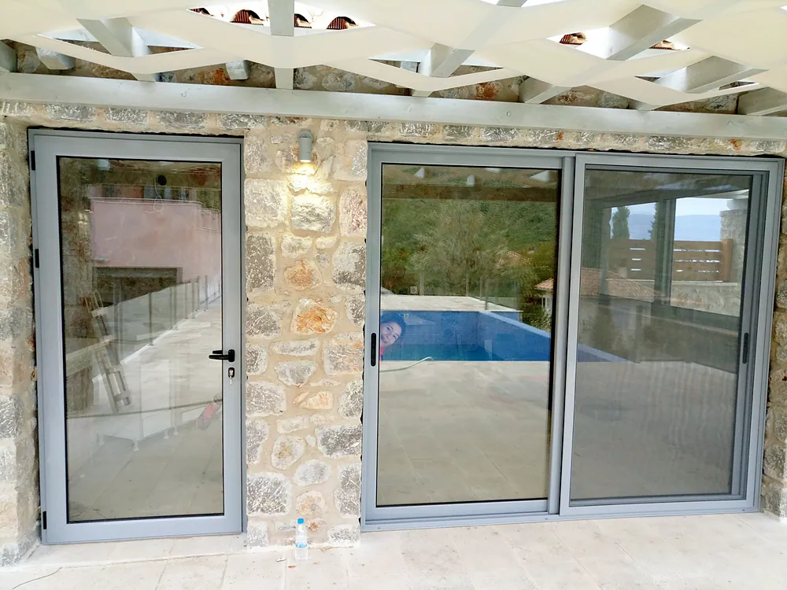
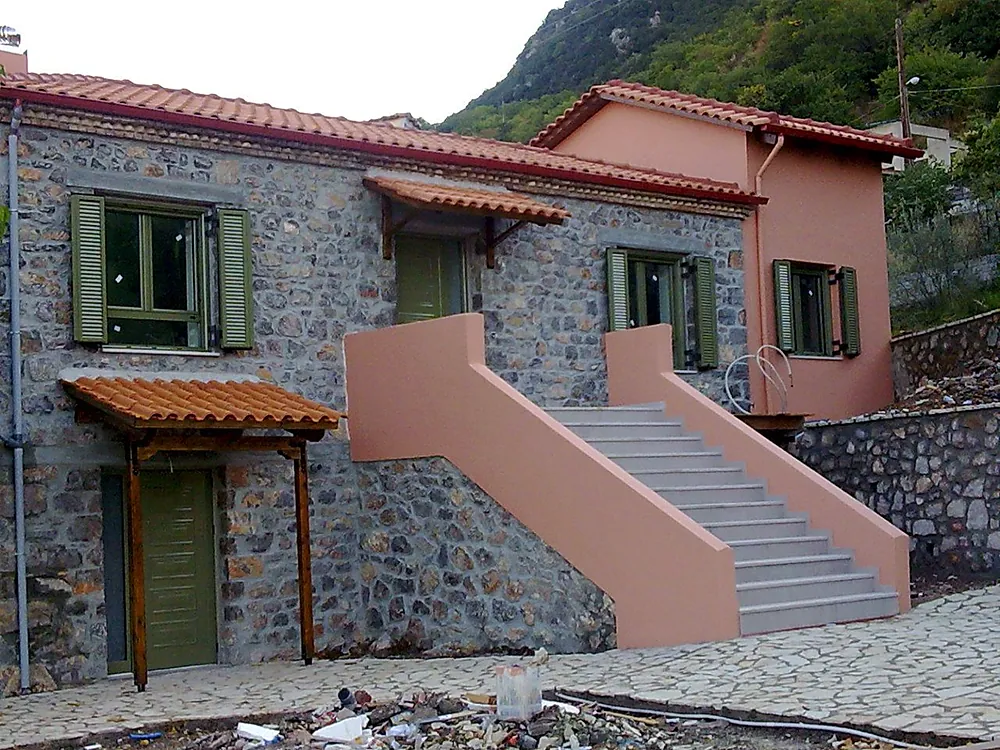
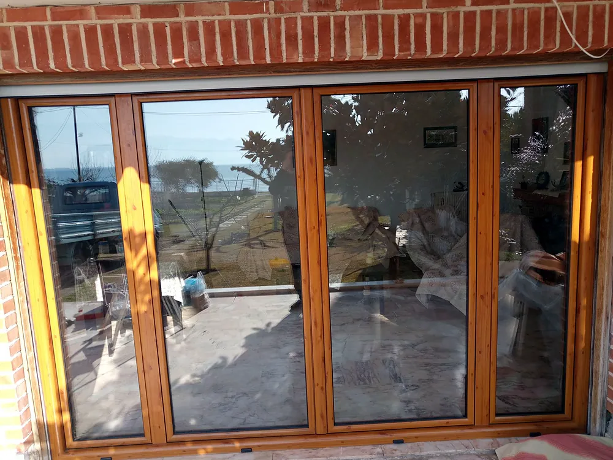
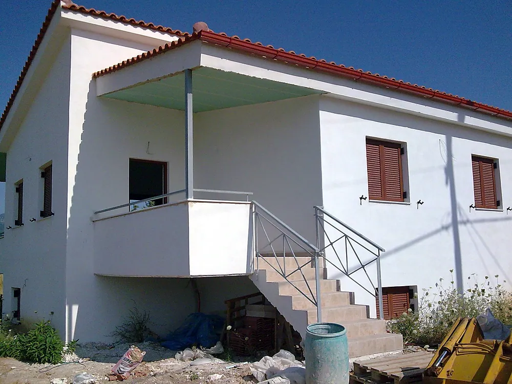
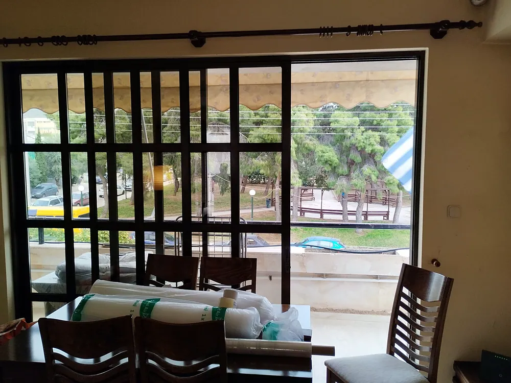
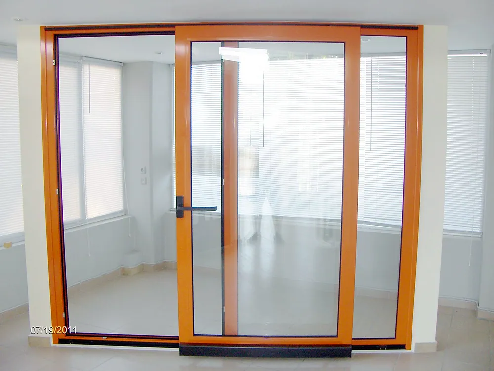
AluComfort · Κουφώματα αλουμινίου & PVC
Η άνεση που αξίζει το σπίτι σας.
Πάνω από 20 χρόνια αντικαθιστούμε παλιά κουφώματα με νέα, ενεργειακά συστήματα αλουμινίου και PVC — από την επιμέτρηση μέχρι την άψογη τοποθέτηση.
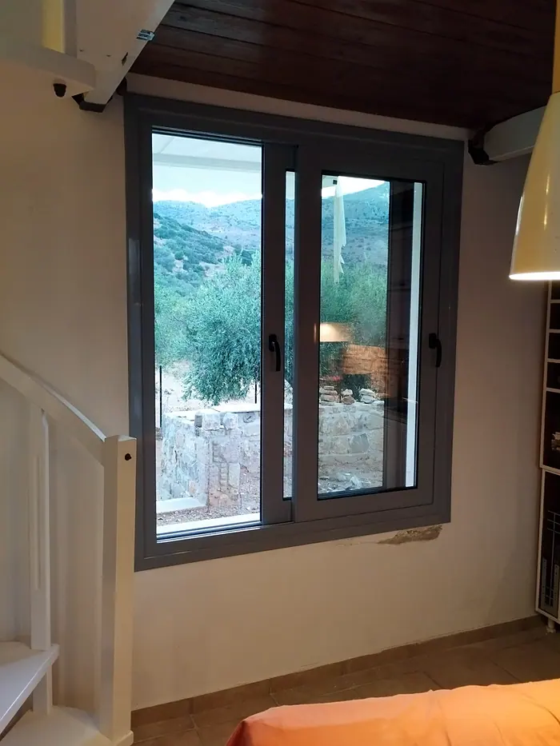
Η εταιρεία
Το σπίτι σας είναι το καταφύγιό σας.
Στην AluComfort, με εμπειρία πάνω από 20 χρόνια, πιστεύουμε ότι το σπίτι σας είναι το καταφύγιό σας. Με εξειδίκευση στις ανακαινίσεις κατοικιών και την αντικατάσταση παλαιών κουφωμάτων, προσφέρουμε ολοκληρωμένες λύσεις αλουμινίου που συνδυάζουν την κορυφαία αισθητική με την ασφάλεια.
Η φιλοσοφία μας βασίζεται στην ποιότητα κατασκευής και την ενεργειακή αναβάθμιση. Επιλέγοντας την AluComfort, επενδύετε σε κουφώματα υψηλής θερμομόνωσης και ηχομόνωσης, με ιδανικές συνθήκες διαβίωσης και αισθητή οικονομία στους λογαριασμούς ενέργειας όλο τον χρόνο.
Με υπευθυνότητα, συνέπεια και έμφαση στη λεπτομέρεια, η έμπειρη ομάδα μας αναλαμβάνει κάθε στάδιο της εργασίας — από τη σωστή επιμέτρηση και τη μελέτη του χώρου σας μέχρι την τελική, άψογη τοποθέτηση.
AluComfort — η άνεση που αξίζει το σπίτι σας.
Κατασκευές – Επισκευές κουφωμάτων αλουμινίου – PVC
Ό,τι χρειάζεται το σπίτι σας στα ανοίγματά του — από την πρώτη μέτρηση ως την τελευταία ρύθμιση.
- 01
Αντικατάσταση παλαιών κουφωμάτων
Αποξηλώνουμε γρήγορα και καθαρά τα παλιά σας ξύλινα ή σιδερένια κουφώματα και τοποθετούμε νέα, ενεργειακά συστήματα αλουμινίου που αλλάζουν αμέσως την όψη και την αίσθηση του σπιτιού σας.
- 02
Ενεργειακή αναβάθμιση & μόνωση
Σας βοηθάμε να επιλέξετε τα κατάλληλα προφίλ και ενεργειακούς υαλοπίνακες, ώστε να μειωθούν αισθητά οι απώλειες ενέργειας και το κόστος θέρμανσης και ψύξης. Ιδανικές λύσεις και για ένταξη σε προγράμματα τύπου «Εξοικονομώ».
- 03
Συστήματα σκίασης & προστασίας
Εξοπλίζουμε τα παράθυρα και τις μπαλκονόπορτές σας με σύγχρονα ρολά (χειροκίνητα ή ηλεκτρικά), παντζούρια αλουμινίου και σίτες κάθε τύπου, για προστασία από τον ήλιο και τα έντομα.
- 04
Κουφώματα PVC
Κουφώματα PVC για όσους θέλουν καλή θερμομόνωση και ηχομόνωση με ελάχιστη συντήρηση, σε λευκό ή χρωματιστό φινίρισμα.
- 05
Θωρακισμένες πόρτες
Θωρακισμένες πόρτες εισόδου σε πολλά σχέδια και αποχρώσεις, για ασφάλεια που δεν χαλάει την αισθητική της εισόδου σας.
- 06
Κάγκελα αλουμινίου
Κάγκελα για μπαλκόνια, περιφράξεις και σκάλες, εξωτερικά και εσωτερικά. Το αλουμίνιο δεν σκουριάζει και δεν θέλει βάψιμο.
- 07
Επισκευές (μερεμέτια)
Ρυθμίσεις, αλλαγή μηχανισμών, χερουλιών, λάστιχων και σίτας, ώστε τα κουφώματά σας να κλείνουν ξανά σωστά.
- 08
Μελέτη & επιμέτρηση στον χώρο σας
Έρχεστε σε επαφή μαζί μας και ο εξειδικευμένος τεχνικός μας επισκέπτεται τον χώρο σας για να πάρει ακριβείς διαστάσεις και να σας προτείνει την ιδανική λύση, χωρίς καμία απολύτως δέσμευση.
Τι πρεσβεύουμε
- Ποιότητα κατασκευής.
- Ενεργειακή αναβάθμιση.
- Υπευθυνότητα & συνέπεια.
- Έμφαση στη λεπτομέρεια.
Έργα
Σπίτια και κτήρια που αλλάξαμε
Φωτογραφίες από τη δουλειά μας — από το εργοτάξιο ως το τελικό αποτέλεσμα. Πατήστε ένα έργο για να δείτε όλες τις φωτογραφίες του.
Η δουλειά μας
Πριν & μετά
Σύρετε τη γραμμή σε κάθε φωτογραφία και δείτε τον ίδιο χώρο πριν και μετά τη δουλειά μας.


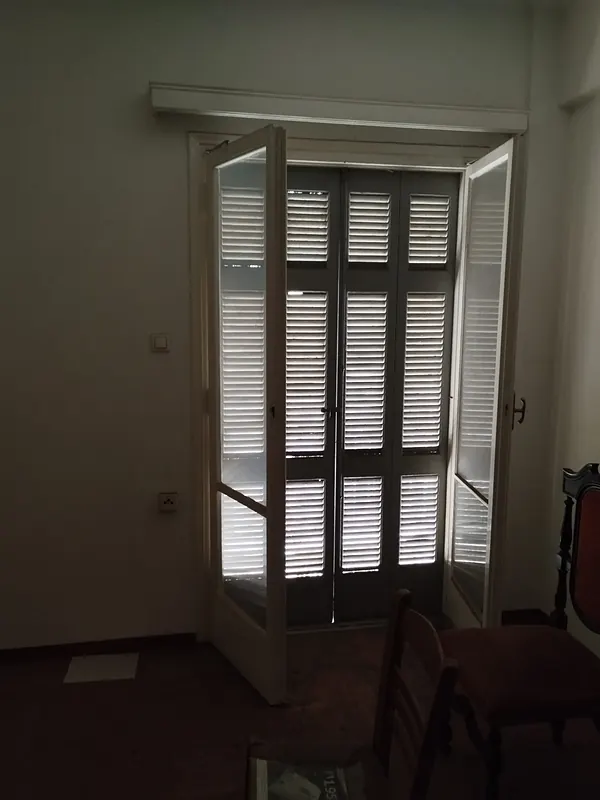
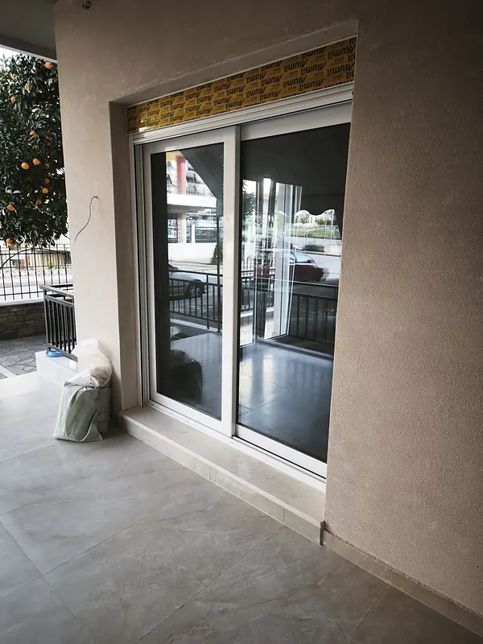
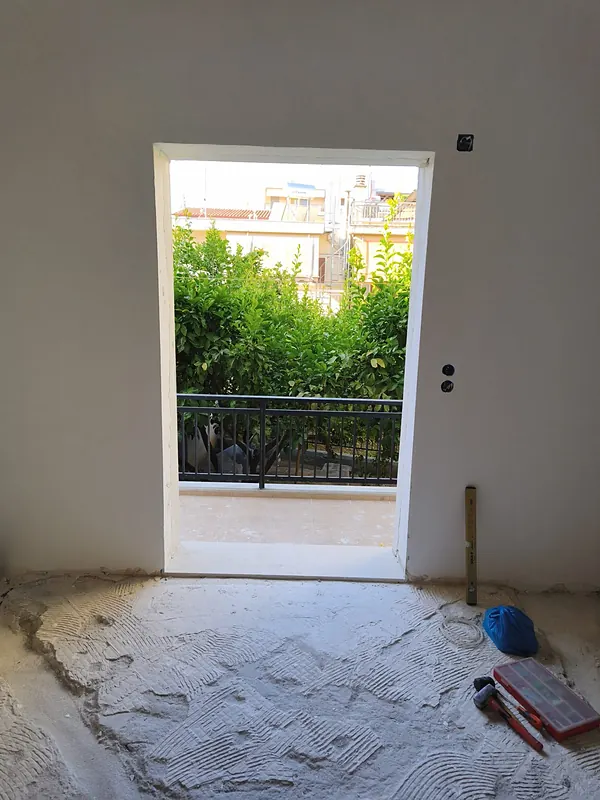

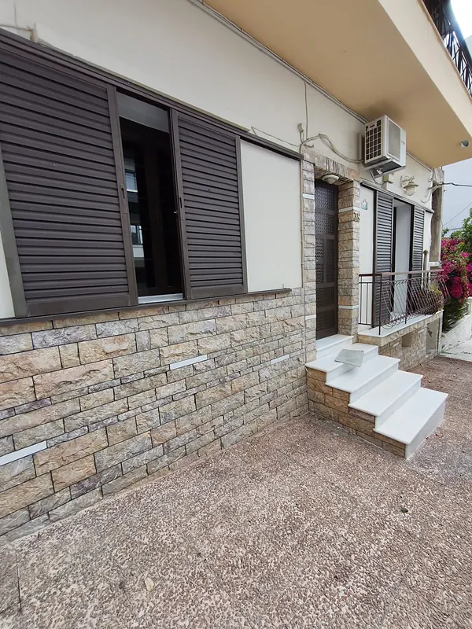
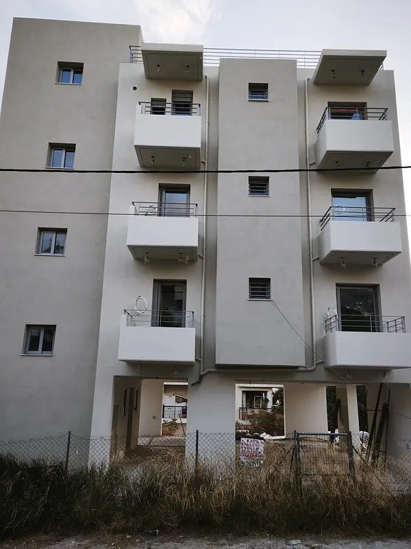

Και πέρα από τα κουφώματα
Πόρτες, κάγκελα, καμπίνες ντους & άλλα
Πατήστε μια κατηγορία για να δείτε όλες τις φωτογραφίες από τη δουλειά μας.
Ενεργειακή αναβάθμιση
Τι κάνει ένα κούφωμα να μονώνει
Μέσα σε κάθε ενεργειακό κούφωμα υπάρχουν λίγα απλά πράγματα που κρατούν έξω το κρύο, τη ζέστη και τον θόρυβο. Σας βοηθάμε να διαλέξετε τα σωστά για το σπίτι σας — και για ένταξη σε προγράμματα τύπου «Εξοικονομώ».
- ΘερμοδιακοπήΈνα ένθετο που χωρίζει το εσωτερικό από το εξωτερικό του προφίλ, ώστε το κούφωμα να μη «μεταφέρει» το κρύο μέσα.
- Διπλός ενεργειακός υαλοπίνακαςΔύο τζάμια με κενό ανάμεσα — λιγότερες απώλειες θερμότητας και λιγότερος θόρυβος.
- Λάστιχα στεγάνωσηςΚλείνουν κάθε αρμό, για να μη μπαίνει αέρας, σκόνη και νερό.
- Προφίλ με θαλάμουςΕσωτερικοί θάλαμοι που κάνουν το κούφωμα πιο γερό και μονώνουν ακόμη καλύτερα.
Πώς δουλεύουμε
Από το πρώτο τηλέφωνο ως την τελευταία βίδα
Πέντε καθαρά βήματα — ξέρετε πάντα τι ακολουθεί.
- 01
Τηλεφωνείτε
Μας λέτε τι θέλετε να αλλάξει στο σπίτι σας.
- 02
Επίσκεψη & επιμέτρηση
Ο τεχνικός μας έρχεται, παίρνει ακριβείς διαστάσεις και μελετά τον χώρο, χωρίς δέσμευση.
- 03
Πρόταση & προσφορά
Σας προτείνουμε σύστημα, υαλοπίνακα και χρώμα που ταιριάζουν στο σπίτι και στον προϋπολογισμό σας.
- 04
Κατασκευή
Τα κουφώματα κατασκευάζονται στις δικές σας διαστάσεις.
- 05
Τοποθέτηση
Αποξήλωση των παλιών και άψογη τοποθέτηση των νέων, γρήγορα και καθαρά.
Ερωτήσεις
Συχνές ερωτήσεις
- Επιχείρηση
- AluComfort
- Τι κάνουμε
- Κουφώματα αλουμινίου & PVC, σκίαση, θωρακισμένες, κάγκελα, επισκευές
- Εμπειρία
- Πάνω από 20 χρόνια
- Τηλέφωνο
- 697 285 1528
Πώς γίνεται η επιμέτρηση;
Μας καλείτε και ο εξειδικευμένος τεχνικός μας επισκέπτεται τον χώρο σας, παίρνει ακριβείς διαστάσεις και σας προτείνει την ιδανική λύση, χωρίς καμία απολύτως δέσμευση.
Αλουμίνιο ή PVC;
Και τα δύο δίνουν πολύ καλή μόνωση. Το αλουμίνιο είναι ανθεκτικό, επιτρέπει λεπτά προφίλ και μεγάλα ανοίγματα· το PVC μονώνει πολύ καλά με ελάχιστη συντήρηση. Στην επίσκεψη σας λέμε τι ταιριάζει στο δικό σας σπίτι.
Μπορεί να ενταχθεί η αλλαγή στο «Εξοικονομώ»;
Η αντικατάσταση με ενεργειακά κουφώματα είναι από τις εργασίες που καλύπτουν προγράμματα τύπου «Εξοικονομώ». Σας βοηθάμε να επιλέξετε προφίλ και υαλοπίνακες που ταιριάζουν στις απαιτήσεις του προγράμματος.
Πόσο κρατάει η τοποθέτηση;
Εξαρτάται από τον αριθμό και το μέγεθος των κουφωμάτων. Το χρονοδιάγραμμα σας το λέμε μαζί με την προσφορά.
Θα γίνει μεγάλη φασαρία στο σπίτι;
Η αποξήλωση και η τοποθέτηση γίνονται γρήγορα και καθαρά. Πριν ξεκινήσουμε, σας εξηγούμε τι ακριβώς θα γίνει στο δικό σας σπίτι.
Επικοινωνία
Ας δούμε μαζί τον χώρο σας
Καλέστε μας και ο τεχνικός μας θα έρθει να πάρει διαστάσεις και να σας προτείνει τη σωστή λύση, χωρίς δέσμευση.
697 285 1528- E-mailalucomfort@gmail.com
- ΕπισκέψειςΚατόπιν ραντεβού — τηλεφωνήστε μας